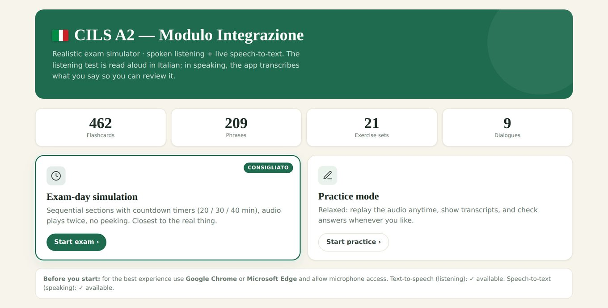
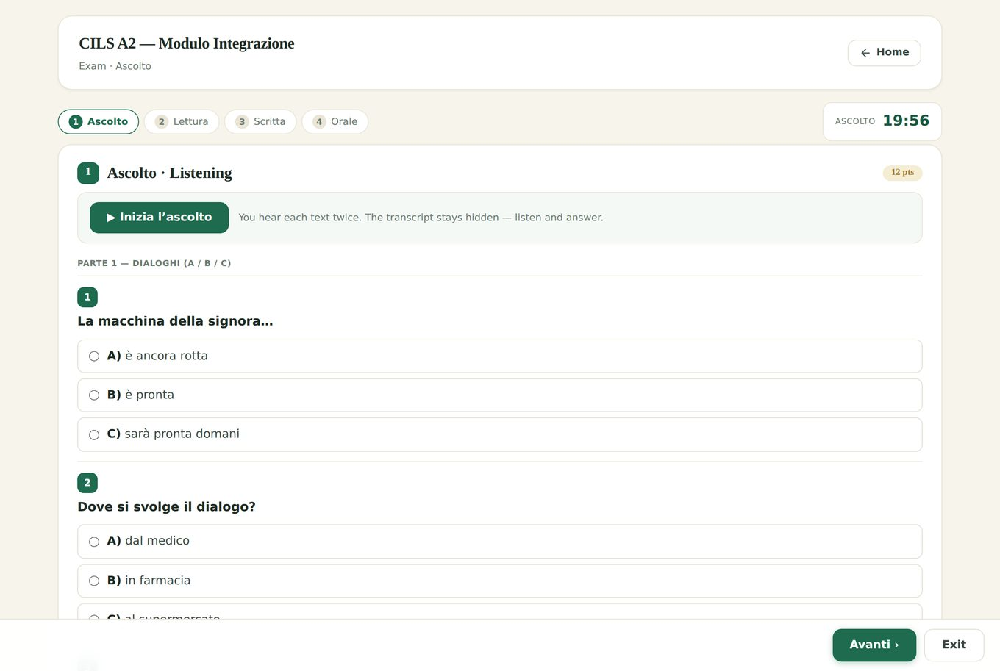
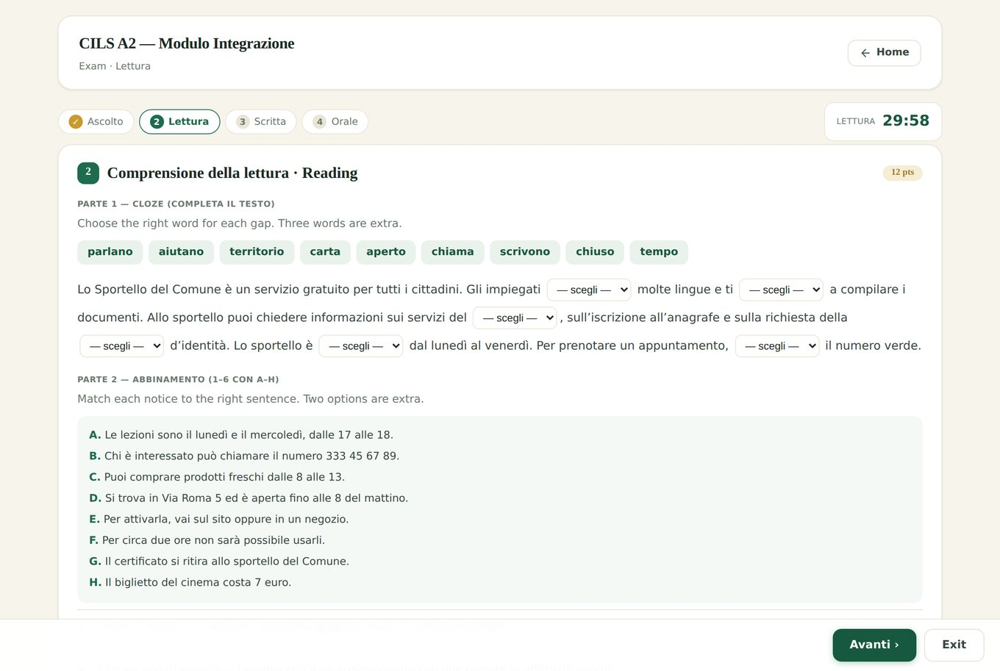
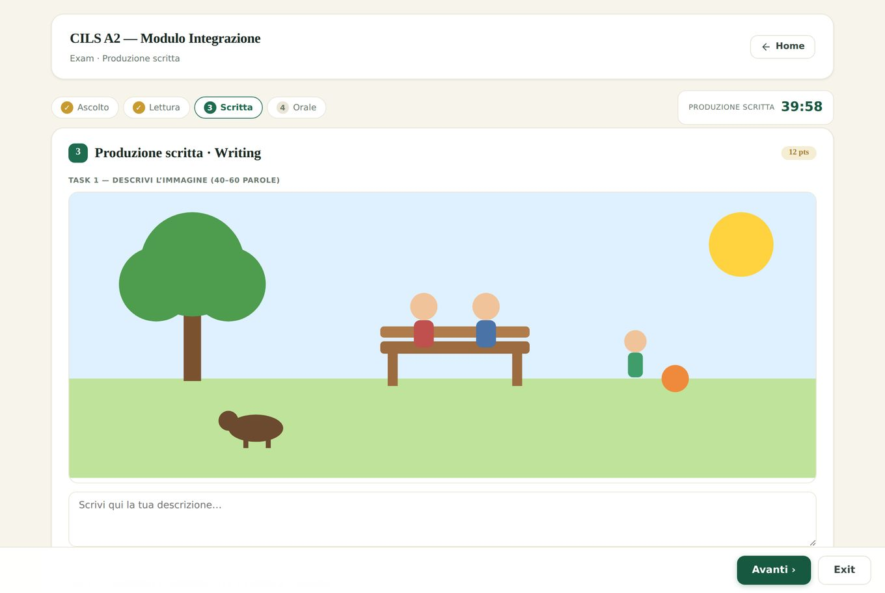
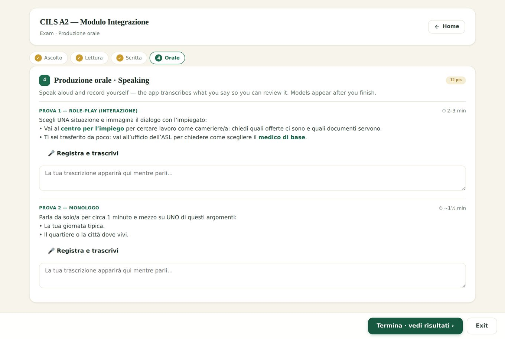

ASCOLTO: Language Exam Simulator
Why is there nowhere to practise the exam you're about to sit?
A web app for the CILS A2 Italian exam: four timed sections in the exam's own order, listening read aloud, speech to text for the oral. I used it before sitting the real one. Below, the exam day as a drawing: pick a section, start the clock, and feel what the app does when the time runs out.
- Stopped at
- Everything online teaches you Italian. Nothing recreates the clock.
- Noticed
- Practice is not rehearsal.
- Tradeoff
- Faithful and people bounce off it. Forgiving and they learn less.
- Decided
- Went strict. Sat the real one three weeks later.
The walkthrough, as first published
Real screens from the app built while preparing for the CILS A2 Integrazione, Modulo Integrazione, then the three choices behind it.
Practice is not rehearsal
Every language app teaches you Italian. Almost none rehearse the examthe fixed order, the countdown, the audio that plays twice and never again. I was passing every practice test and panicking in the mocks, so I built the thing that was missing. These are real screens from it.





Sit the whole thing
Ninety minutes, four sections, in the exam's own order. Listening is spoken aloud, the oral section transcribes you, and everything stays in your browser. Chrome or Edge, microphone on.
What I actually decided
Three choices did most of the work, and two of them were about taking things away.
The countdown is the product
Not a feature bolted onto a quiz. Sections run 20, 30 and 40 minutes in the exam's own order, and when a timer ends the app moves on without asking. Being cut off mid answer is the thing you want to have already felt once.
Two plays, then silence
Listening is spoken by the browser rather than prerecorded, so texts can be exam length and I can add more without a studio. Replay is capped at two and the transcript is hidden. Removing the feature was the feature.
Speak, don't type
The oral section records and transcribes you, so you review your real sentences instead of the ones you intended. Models appear only after you finish, otherwise you copy instead of composing.
Three choices did most of the work, and two of them were about taking things away.
- StopPassing every practice test and panicking in the mocks.What made me stop.
- NoticeNothing online recreated the fixed order, the clock, or the audio that plays twice and never again.Where the obvious answer stopped working.
- TradeoffFaithful and people bounce off it. Forgiving and they learn less.What could not be had both ways.
- DecideWent strict: no pause, two plays, models only after. Sat the real one three weeks later.What it cost: the practice mode nobody is nudged towards.